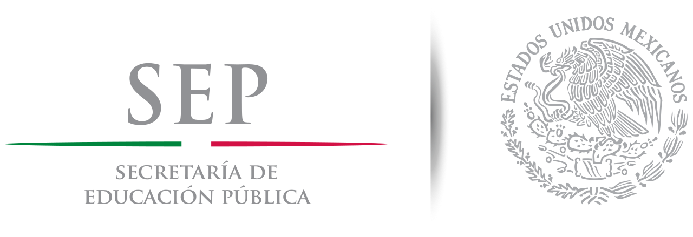
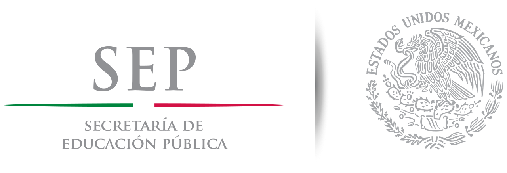
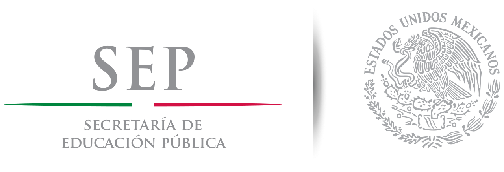

Portal del Centro de Bachillerato Tecnológico Industrial y de Servicios Numero.243
 

Portal del Centro de Bachillerato Tecnológico Industrial y de Servicios Numero.243

Formar personas con conocimientos tecnologicos en las areas industrial, comercial y de servicios, a traves de la preparacion de bachillleres y profesionales tecnicos, con el fin de contribuir al desarrollo sustentable del pais.

La carrera de técnico en ofimática ofrece las
competencias profesionales que permiten al
estudiante realizar actividades dirigidas a: obtener y
gestionar información de manera digital, mediante el
uso eficaz y eficiente de los recursos informáticos
disponibles con la finalidad de satisfacer las
necesidades y requerimientos del cliente.
Al termino de la carrera el egresado podrá laborar en
compañias y negocios públicos o privadas, dedicados al
desarrollo de software y en el análisis, diseño e
implementacion de sistemas de información de proposito
general y particular; asi mismo tienes la opción de titularte
como: Técnico en programación o continuar con tus estudios
universitarios en las siguientes carreras: Ing.Civil, Ing.
Electromecánico, Ing. Industrial, Ing. Electricista, Lic. en
Informática, Arquitectura o en cualquier carrera del área de
Físico-matemático.
Visita el video para saber más de la ofimatica.
EN EL SIGUIENTE BOTON PUEDES
DESCARGAR EL PROGRAMA DE ESTUDIOS
PARA VERIFICAR LAS MATERIAS QUE
DEBES CURSAR EN ESTA AREA